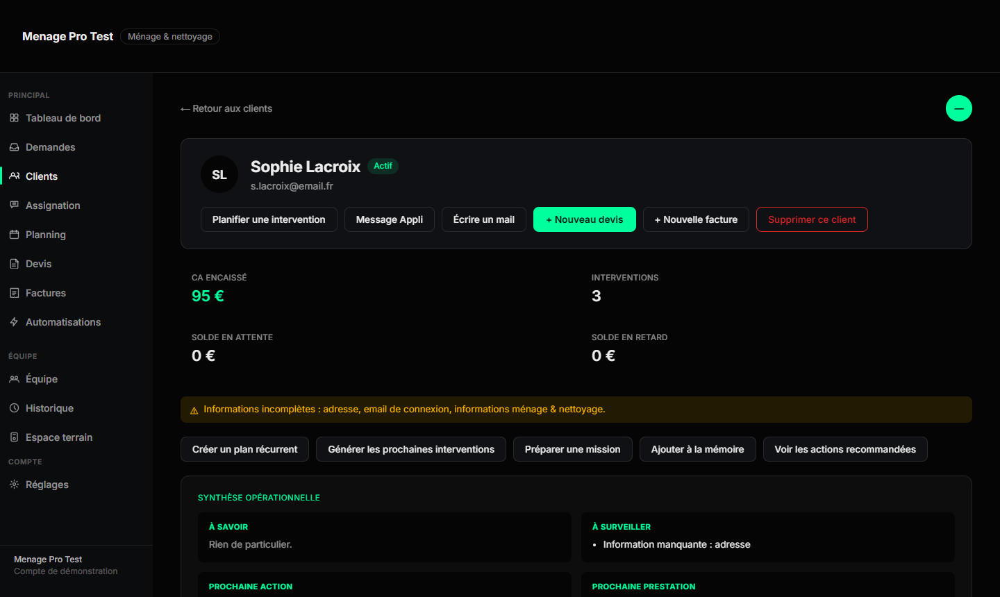
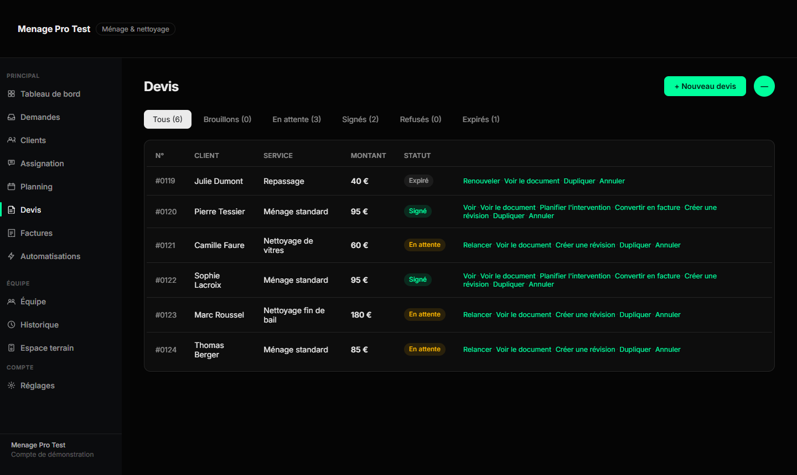
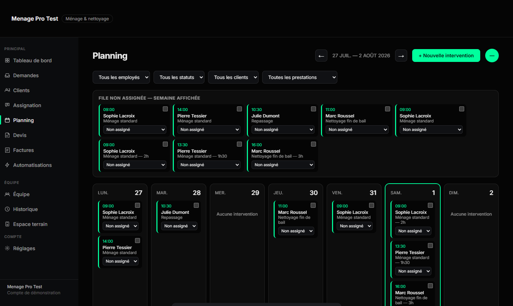
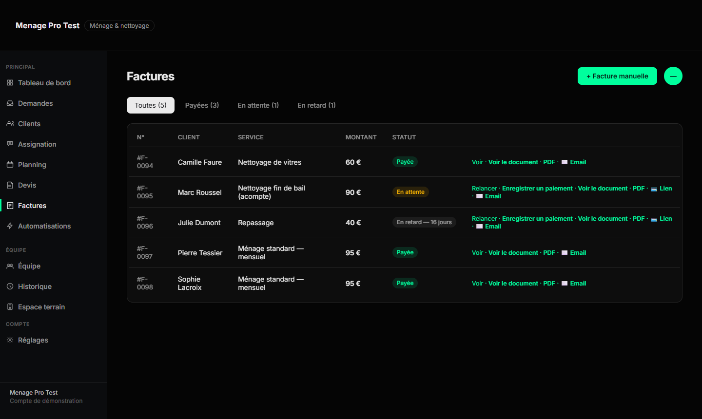

Clients, devis, planning, interventions et factures restent reliés. Vous avancez sans rechercher une information ni saisir deux fois la même chose.
Le client ne disparaît pas d'un écran à l'autre. Ses coordonnées, son devis, son intervention et sa facture restent reliés dans le même dossier.

Sophie Lacroix · Fiche cliente
Adresse et consignes sont enregistrées une fois, puis réutilisées à chaque étape suivante.

Sophie Lacroix · Devis signé, 95 €
Il ne reste qu'à ajouter la prestation et le prix. Le client signe en ligne, depuis son téléphone.

Intervention planifiée · Sophie Lacroix
Avec la bonne date, la bonne adresse et les bonnes consignes. L'équipe voit aussitôt qui est assigné et où intervenir.

Sophie Lacroix · Facture payée, 95 €
Les informations sont reprises sans ressaisie. Vous vérifiez, envoyez et suivez le règlement.
Indiquez vos services, ajoutez vos clients et invitez votre équipe. Seba organise ensuite chaque information autour de votre façon de travailler.
Renseignez vos coordonnées, vos services et vos tarifs habituels. Votre espace est préparé avec les informations utiles à votre métier.
Créez vos fiches clients ou importez votre fichier existant. Adresses, consignes, documents et historique restent réunis au même endroit.
Chaque membre retrouve son planning et ses missions — sans accès aux informations internes réservées au responsable.
Vous gardez la vue d'ensemble sur les clients, le planning, les devis, les interventions et les règlements.
Chaque membre retrouve ses missions, ses horaires et les consignes qui le concernent.
Le client consulte ses devis, ses factures et l'avancement de ses interventions depuis un accès privé — sans vous solliciter.
Créez votre espace et suivez un premier client du devis jusqu'au paiement. Sans carte bancaire.
Créer mon espace